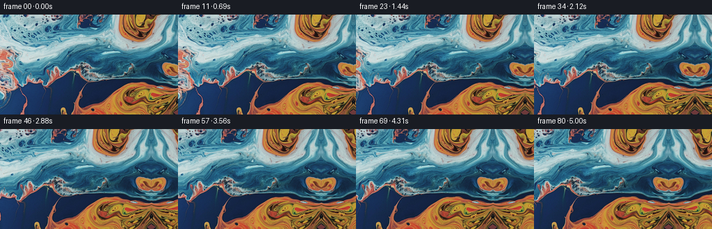
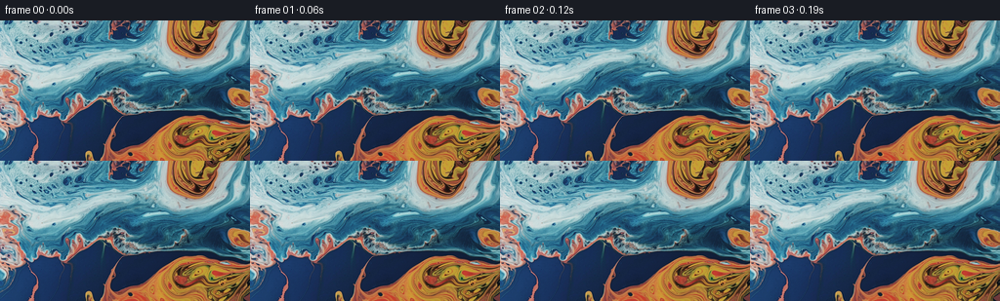

← 本轮 smoke 总览traex/GPT-5.6-Sol · 0002_s4
text · 256×144 · 16.0 FPS · 81 帧 · 状态 complete · 输出 tokens 7386
原始任务a close up of a blue and orange liquid, camera pans right
当前保存结果
已保存候选与代码修改
这里按时间展示外部捕获的候选，每份均可单独播放。保存新版本不等于完成视觉检查；下方工具证据记录实际看过的图。
候选 01 · 2026-11-09T02:01:09.646658+00:00 · 点开播放与检查图
inspection.png

transition_check.png

代码变化
--- 上一保存版本
+++ 本次保存版本
@@ -0,0 +1,113 @@
+"""Generate the requested close-up liquid pan from the supplied first frame.
+
+The input is an abstract, essentially planar liquid texture. A wider "world"
+is made by continuing the fluid folds at the right edge, then a smooth virtual
+camera move samples that world from progressively farther to the right. Very
+small, low-frequency coordinate changes keep the material from looking like a
+rigid printed surface.
+"""
+
+from pathlib import Path
+
+import cv2
+import numpy as np
+from PIL import Image
+
+import artifact_io
+
+
+W, H = 256, 144
+N = 81
+
+
+def build_panorama(first: np.ndarray, width: int = 384) -> np.ndarray:
+ """Continue the right edge with a gently warped reflected fluid texture.
+
+ Reflection is a good boundary condition for amorphous liquid: it exactly
+ continues all colors at the edge. The increasing two-dimensional warp
+ breaks the reflection away from the join, preventing a mechanical mirror
+ look in the newly revealed area.
+ """
+ world = np.empty((H, width, 3), np.float32)
+ world[:, :W] = first.astype(np.float32)
+
+ yy, xx = np.mgrid[0:H, W:width].astype(np.float32)
+ d = xx - (W - 1.0)
+
+ # Start as a reflected continuation. Both perturbations vanish at the
+ # boundary and become noticeable only in the newly revealed material.
+ fade = np.clip((d - 1.0) / 68.0, 0.0, 1.6)
+ map_x = (W - 1.0) - d
+ map_x += fade * (
+ 4.2 * np.sin(yy * 0.061 + d * 0.031)
+ + 1.8 * np.sin(yy * 0.139 - d * 0.052)
+ )
+ map_y = yy + fade * (
+ 5.2 * np.sin(yy * 0.043 + d * 0.047 + 0.6)
+ + 2.1 * np.sin(yy * 0.121 - d * 0.026)
+ )
+
+ extension = cv2.remap(
+ first.astype(np.float32),
+ map_x,
+ map_y,
+ interpolation=cv2.INTER_CUBIC,
+ borderMode=cv2.BORDER_REFLECT_101,
+ )
+ world[:, W:] = extension
+ return world
+
+
+def render() -> np.ndarray:
+ here = Path(__file__).resolve().parent
+ first = np.asarray(Image.open(here / "first_frame.png").convert("RGB"))
+ if first.shape != (H, W, 3):
+ raise ValueError(f"unexpected first-frame shape: {first.shape}")
+
+ world = build_panorama(first)
+ frames = np.empty((N, H, W, 3), np.uint8)
+ frames[0] = first # contract: byte-for-byte pixel identity
+
+ oy, ox = np.mgrid[0:H, 0:W].astype(np.float32)
+ for i in range(1, N):
+ t = i / (N - 1.0)
+
+ # Ease the camera onto and off the move. Sampling farther right makes
+ # the liquid structures travel left on screen: a camera pan to right.
+ ease = t * t * (3.0 - 2.0 * t)
+ pan = 62.0 * ease
+ wx = ox + pan
+
+ # Slow sub-pixel circulation. Differences from the t=0 field are
+ # used, so the supplied opening image remains the exact initial state.
+ phase = 0.78 * t
+ dx = 0.55 * (
+ np.sin(oy * 0.045 + wx * 0.018 + phase)
+ - np.sin(oy * 0.045 + wx * 0.018)
+ )
+ dx += 0.22 * (
+ np.sin(oy * 0.112 - wx * 0.027 - 0.55 * phase)
+ - np.sin(oy * 0.112 - wx * 0.027)
+ )
+ dy = 0.72 * (
+ np.sin(wx * 0.030 + oy * 0.013 + 0.70 * phase)
+ - np.sin(wx * 0.030 + oy * 0.013)
+ )
+ dy += 0.20 * np.sin(np.pi * t) * np.sin(oy * 0.075 - wx * 0.015)
+
+ sampled = cv2.remap(
+ world,
+ (wx + dx).astype(np.float32),
+ (oy + dy).astype(np.float32),
+ interpolation=cv2.INTER_LANCZOS4,
+ borderMode=cv2.BORDER_REFLECT_101,
+ )
+ frames[i] = np.clip(np.rint(sampled), 0, 255).astype(np.uint8)
+
+ return frames
+
+
+if __name__ == "__main__":
+ case_dir = Path(__file__).resolve().parent
+ artifact_io.save(render(), case_dir)
+
候选 02 · 2026-11-09T02:01:14.500924+00:00 · 点开播放与检查图
inspection.png

transition_check.png

代码变化
代码未变化；重新保存了产物。
可观测工具行为
命令 1 · 2026-11-09T01:59:20.144000+00:00/bin/bash -lc "cat GENERATION_RULES.md && printf '\\n--- PROMPT ---\\n' && cat prompt.txt"
exit 0 命令 2 · 2026-11-09T01:59:20.411701+00:00/bin/bash -lc "find . -maxdepth 2 -type f -printf '%P\\n' | sort && printf '\\n--- tools ---\\n' && command -v ffmpeg && command -v python3 && python3 - <<'PY'
from PIL import Image
im=Image.open('first_frame.png')
print(im.mode, im.size)
PY"exit 1 命令 3 · 2026-11-09T01:59:30.777668+00:00/bin/bash -lc "cat task_spec.json && sed -n '1,240p' artifact_io.py"
exit 0 命令 4 · 2026-11-09T01:59:31.396595+00:00/bin/bash -lc "python3 - <<'PY'
from PIL import Image
import numpy as np
im=np.array(Image.open('first_frame.png').convert('RGB'))
print('shape',im.shape,'dtype',im.dtype)
for q in [0,1,5,25,50,75,95,99,100]: print(q,np.percentile(im,q,axis=(0,1)))
print('mean/std',im.mean((0,1)),im.std((0,1)))
# dominant color categories
r,g,b=im.transpose(2,0,1)
labels=np.full(r.shape,'.',dtype='<U1')
labels[(b>r*1.15)&(b>g*1.1)]='B'
labels[(r>b*1.15)&(r>g*1.05)]='O'
labels[(r>180)&(g>140)&(b<120)]='Y'
labels[(r<50)&(g<50)&(b<50)]='K'
labels[(r>200)&(g>200)&(b>200)]='W'
# majority labels blocks 4x4 => 64x36
for y in range(0,144,4):
s=''
for x in range(0,256,4):
z=labels[y:y+4,x:x+4].ravel(); u,c=np.unique(z,return_counts=True); s+=u[c.argmax()]
print(s)
# sample grid RGB every 24,32
print('samples')
for y in range(12,144,24):
print(y,[tuple(im[y,x]) for x in range(16,256,32)])
PY"exit 0 命令 5 · 2026-11-09T01:59:45.007423+00:00/bin/bash -lc "python3 - <<'PY'
from PIL import Image
import numpy as np
im=np.array(Image.open('first_frame.png').convert('RGB')).astype(float)
# compare 12px boundary strip against strips ending/starting elsewhere, with y shifts -15..15 and optionally flips
A=im[:,-16:]
for mode in ('start','rev'):
out=[]
for x in range(0,240):
B=im[:,x:x+16]
if mode=='rev': B=B[:,::-1]
for dy in range(-10,11):
Br=np.roll(B,dy,axis=0)
# gradient/color mse, central vertical ignore? weighted
mse=np.mean((A-Br)**2)
out.append((mse,x,dy))
print(mode,sorted(out)[:10])
# continuity for next pixel based on last k col matching source previous k then candidate after
for k in (1,4,8,16,24):
a=im[:,-k:]
out=[]
for x in range(k,255):
b=im[:,x-k:x]
for dy in range(-10,11):
bb=np.roll(b,dy,0)
mse=np.mean((a-bb)**2)
out.append((mse,x,dy))
print('k',k,sorted(out)[:5])
PY"exit 0 命令 6 · 2026-11-09T01:59:54.147251+00:00/bin/bash -lc "python3 - <<'PY'
for x in ['numpy','PIL','scipy','cv2']:
try:
m=__import__(x); print(x,'ok',getattr(m,'__version__',''))
except Exception as e: print(x,'no',e)
PY"
exit 0 命令 7 · 2026-11-09T02:00:20.172671+00:00/bin/bash -lc "python3 - <<'PY'
from PIL import Image
import numpy as np, cv2
im=np.array(Image.open('first_frame.png').convert('RGB')).astype(np.float32)
for k in (4,8,16,24,32):
a=im[:,-k:]
out=[]
for x in range(k,190):
b=im[:,x-k:x]
for dy in range(-20,21):
bb=np.roll(b,dy,0)
# blur coarse mse
aa=cv2.GaussianBlur(a,(0,0),2)
bbb=cv2.GaussianBlur(bb,(0,0),2)
out.append((np.mean((aa-bbb)**2),x,dy))
print(k,sorted(out)[:8])
PY"exit 0 命令 8 · 2026-11-09T02:01:07.372305+00:00/bin/bash -lc "python3 generate.py && python3 - <<'PY'
from pathlib import Path
from PIL import Image
import numpy as np
f=np.stack([np.array(Image.open(f'frames/{i:02d}.png')) for i in range(81)])
a=np.array(Image.open('first_frame.png').convert('RGB'))
print('shape/dtype',f.shape,f.dtype)
print('frame0 exact',np.array_equal(f[0],a), 'max',np.abs(f[0].astype(int)-a.astype(int)).max())
print('mean abs sequential',np.abs(np.diff(f.astype(np.int16),axis=0)).mean(axis=(1,2,3))[[0,1,9,39,79]])
print('first-to checkpoints',[round(np.abs(f[i].astype(int)-f[0].astype(int)).mean(),2) for i in (1,10,20,40,60,80)])
print('files',[(p.name,p.stat().st_size) for p in map(Path,['pixels.npz','inspection.png','transition_check.png','index.html'])])
PY"exit 0 保存候选 2 份；完成命令 8 次；可验证图片返回 0 张。原始 API 响应与完整日志保留在本地。